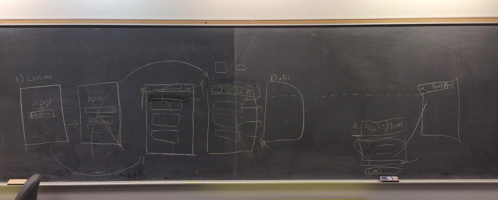
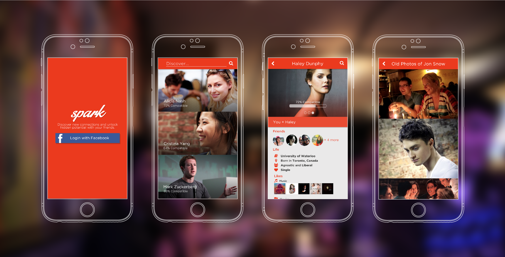
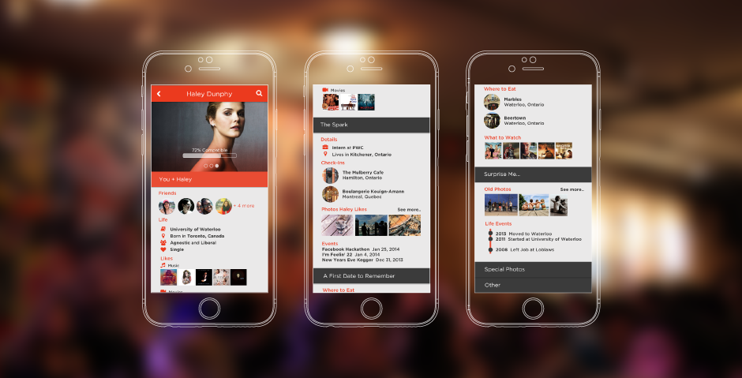

Role
I worked on a team of four in a twenty-four hour hackathon. I was responsible for making product decisions as well as determining the flow and look-and-feel of the iOS app we decided to build.
Context
We decided that with the all of the information available to us through Facebook, it should be less and less taboo to look people up and do some "pre-research" before meeting them, or after just meeting them. So, given all the information that is available, how do we make this information more accessible to enhance, or maybe just alter the way we get to know people?
Since this was a hack-a-thon, we were looking for a simple solution - one that could be powerful with the use of only a few screens. The power in the app was to be way information could be organized to be most accessible to transform relationships.
User stories we imagined were:
- As a person who likes meeting new people, I want to know more about the people I meet so I can start interesting conversations.
- As someone out on the "dating market", I want to find people who are compatible with me, and flourish those relationships.
- As someone who networks for business, I want to know more about the people I meet at events so I can approach them and build a relationship with them quickly.
Design
We started by separating a new friendship or relationship into different layers. What kind of information would a typical user want to know about someone they've just met?
- A simple social login screen - logging in with Facebook so we could access details from the Facebook API
- Leads to a "discoverable view" with a search bar - the search bar to allow users to find someone they had in mind, or to find out more about their existing social network.
- A profile view of the person they've searched up, with select information surfaced
- A detailed view of select information from the profile - likely photos


profile view
We determined that from personal experience, what can really spark a relationship is commonality between two people. As a result, we designed the profile view to be separated into sections, like layers, to symbolize different depths of getting to know someone. In addition, we created the concept of a "compatibility score", quantitatively weighting how alike a user was compared to someone else within their network.
We never fully resolved what exactly the sections would entail, but the idea is that the first section would provide the basics - what do you have in common with the other person? Stuff like, common friends, similar likes and places you've both been. With that, the next section would provide details for "The Spark" - or the conversation starters that would lead into more details being shared amongst the two people. Further sections would suggest ideas for places to meet up, and then provide some surprises - stuff like old photos and posts that would be effortful to dig up using Facbeook's Timeline, but easily accessible through Facebook's API.

Something I wish we would have done during the hackathon, however, is go around on one of our phones with a rough prototype and ask other hackers to walk through our product to identify pain points, as well as ask them a few other questions. This would have been cool to do at a low-fidelity stage to gauge feedback to interactions and the product itself. Then, at a higher fidelity, I would have loved to gauge the emotional response to the product in general, evoked by the branding and the visual details.